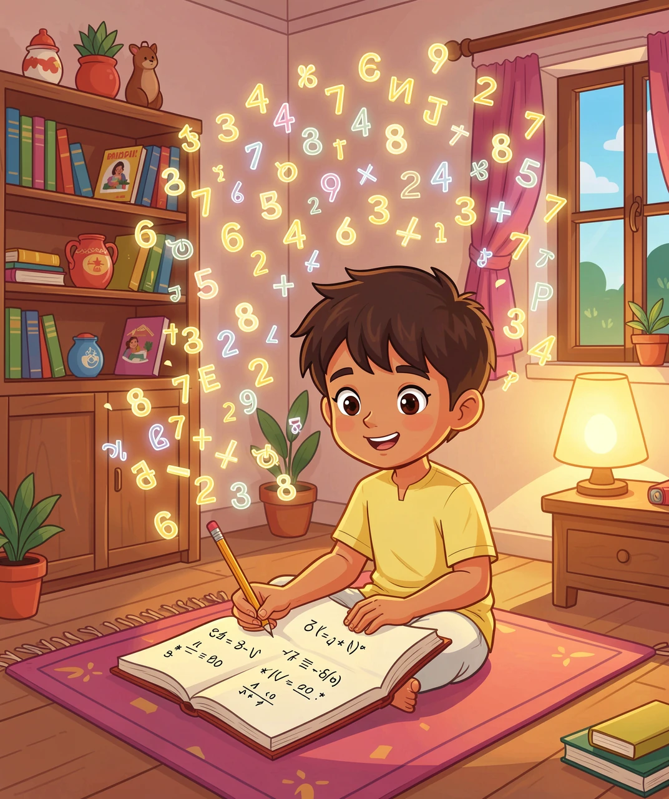

一个没上过大学的印度青年，写下了几千个没人看得懂的公式
1887 年，印度南部的一个小镇上，出生了一个叫斯里尼瓦萨·拉马努金的孩子。他家很穷，上学时数学成绩好得离谱，可别的科目一塌糊涂，结果大学考了两次都没考上，最后只能在港口当一个小职员，一个月挣很少的钱。
但就是这个"没读过大学"的青年，后来被请到了英国剑桥大学，和当时世界上最厉害的数学家一起工作。直到今天，数学家们还在研究他留下的笔记本——里面有些公式，人们花了一百年才弄明白他当时是怎么想到的。
他到底有什么特别的？我们一层一层往下挖。

翻开拉马努金的笔记本，你会看到一个很奇怪的现象：上面写满了公式，一个接一个，但几乎没有过程。
普通数学家做题是这样的：从一个已知的东西出发，一步一步推导，每一步都要说清楚"为什么能这样走"，最后到达结论。就像走楼梯，你得让人看见每一级台阶。
拉马努金不一样。他像是坐电梯直接到了顶楼——他写结果，不写台阶。英国数学家哈代收到他的第一封信时，里面有 120 个公式，哈代看完后的第一反应是：这人要么是天才，要么是个骗子。
后来哈代想明白了：这些公式太精妙了，骗子编不出来。因为要编出连顶尖数学家都没见过的、而且还是正确的公式，那比自己想出来还难。
那他凭什么"看见"？难道真的有超能力吗？
没有。秘密藏在一个不起眼的地方：他算得极多。
十几岁时，他弄到一本数学手册，里面是几千个公式的结果（没有证明）。别的孩子看这种书会睡着，他把它当成游戏：拿一个公式，自己动手用数字去试，换个数再试，再换个形式试。就这样他在脑子里存了成千上万个"数字长什么样"的样本。
可以这么理解：你见过一百只猫以后，看到一只没见过的动物，你一眼就知道"这好像是猫"。你并没有列出胡须、尾巴、叫声的清单去比对——你的大脑已经把"猫的样子"压缩成了一个感觉。这就是模式识别。
拉马努金在数字世界里见过太多东西了，所以当一个新公式该长什么样时，他的大脑直接跳到结论："应该是这个。"他跳过了推导，不是因为他不会，而是因为他见过太多次相似的图案。
来看一个他写下的式子。左边只有一个数字 3，右边却是一条永远算不完的根号链：
3 = √(1 + 2√(1 + 3√(1 + 4√(1 + 5√……))))
别慌，我们不用看懂它，先来亲手算一算。
这条链是无穷的，所以我们只能"截断"：假设最里面某一层等于 1，然后从里往外一层层开平方。比如算到第 5 层：
最里面先填 1
√(1 + 5×1) = √6 ≈ 2.449
√(1 + 4×2.449) = √10.80 ≈ 3.286
√(1 + 3×3.286) = √10.86 ≈ 3.295
√(1 + 2×3.295) = √7.59 ≈ 2.755
咦，得到 2.755，还没到 3。别急——我们截断得太早了。层数越多，它就越贴近 3：
算到第 3 层 → 2.236
算到第 5 层 → 2.755
算到第 8 层 → 2.963
算到第 10 层 → 2.990
算到第 15 层 → 2.9996
算到第 20 层 → 2.99999
看到了吗？它真的在往 3 那里爬。所以这个等式是对的。
那为什么偏偏是 3？这里藏着拉马努金最招牌的动作。
这个式子很特别：它的每一层长得都一样，只是数字在变。这种"自己套着自己"的东西叫自相似——就像两面镜子对着照，或者俄罗斯套娃，一层里面还是同样的结构。
对付自相似，有个绝招：别一层层硬算，直接问"哪一层能自己圆上"。
我们来试。要让最外层等于 3，就要 3² = 9 = 1 + 2×（里面那层的数）。所以里面那层必须等于 4。
那 4 这一层呢？4² = 16 = 1 + 3×（再里面一层）。所以再里面必须等于 5。
再往里：5² = 25 = 1 + 4×6。成立！每一层都刚好对上：
3² = 1 + 2 × 4 （= 1 + 8 = 9）
4² = 1 + 3 × 5 （= 1 + 15 = 16）
5² = 1 + 4 × 6 （= 1 + 24 = 25）
6² = 1 + 5 × 7 （= 1 + 35 = 36）
为什么能一直对下去？因为有一条你学过的公式：n² − 1 = (n − 1) × (n + 1)——平方差公式。把它挪一下就是 n² = 1 + (n−1)(n+1)，正好是这个套娃的形状。
所以拉马努金根本没有一层层去算。他是先看出这个式子"自己套着自己"，再去找一个能同时满足所有层的答案——一步到位。
这就是他思维的核心：遇到无限长的东西，不要傻算，去找它的"自我结构"。
拉马努金在英国生病住院时，数学家哈代坐出租车去看他。哈代下车后随口说了一句："我坐的这辆车号码是 1729，真是个没意思的数字。"
拉马努金躺在病床上马上接话："不，它非常有意思！它是能用两种方式写成两个立方数之和的最小数字。"
我们来验一下：
1×1×1 + 12×12×12 = 1 + 1728 = 1729
9×9×9 + 10×10×10 = 729 + 1000 = 1729
同一个数，可以被"拆成两个立方"的方式有两种，而 1729 是最小的那个。所以今天数学家把这个数叫做出租车数。
哈代当时问过他一句很有名的话：你怎么知道的？意思是——你是不是早就在书里见过？
拉马努金的回答后来被传成一句名言："每个正整数都是我的私人朋友。"他不是背下来的，他是跟这些数字相处得太久了。
到这里你可能会想：那我们以后也不写过程，直接写答案好了。
不行。这正是故事里最值得记住的部分。
拉马努金的直觉强到离谱，但因为他没受过严格的数学训练，他也会写出错的公式。他不知道有些"看起来很像"的规律，其实只在前几个例子成立，往后就崩了。比如有人发现前几个数符合某个规律，就以为永远符合——结果第几百个数时规律断了。
哈代把他带到剑桥之后，做的最重要的事不是教他新数学，而是教他证明：你怎么知道这个一定是真的？能不能给一个让别人也能一步步走通的台阶？
这才是完整的配方：
直觉负责带你冲到答案门口，规矩（证明）负责确认这扇门后面真的有东西，而且能带别人一起进去。少了前者，你永远在原地打转；少了后者，你可能站在错误的门口还很开心。
1. 先攒例子，再找规律。别急着背公式，先亲手算很多很多具体的数。见过的例子越多，你的"感觉"越准。
2. 遇到"无限长"，别傻算。根号套娃那种式子，一层层算到天亮也算不完。先看它是不是"自己套着自己"，如果是，就去找一个能让每一层都同时成立的答案——一步搞定。
3. 有想法，也要有证明。猜对了很酷，但能说清楚"为什么一定对"，才是真正把东西变成自己的。天才如拉马努金，也需要哈代帮他补上这一课。
（答案：1-B 2-C 3-C 4-B 5-C）